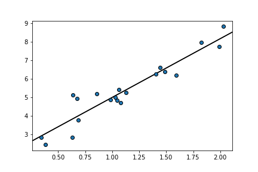
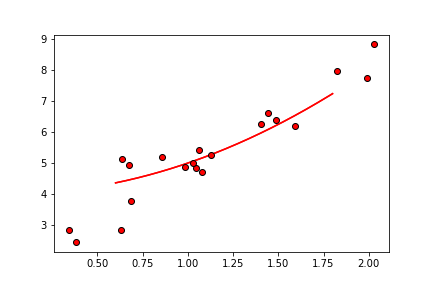
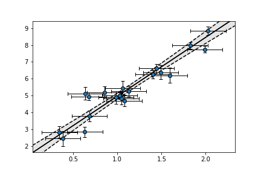
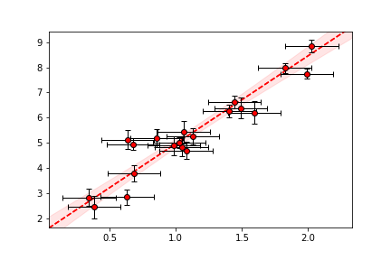

plot_regression¶
-
isopy.tb.plot_regression(axes, regression_result, color=None, line=True, xlim=None, autoscale=False, fill=True, edgeline=True, **kwargs)[source]¶ Plot the result of a regression on matplotlib axes.
If regression_result has a
.yerr(x) -> yerrmethod the error envelope of the regression will also be plotted.- Parameters
axes (axes, plt) – If y is a numpy array axes must be a matplotlib axes object or object with a gca() method that return a matplotlib axes object, such as a matplotlib pyplot instance. If y is an isopy array axes must be a matplotlib Figure or any object with a
.gcf()method that returns a matplotlib Figure object, Such as a matplotlib pyplot instance.regression_result – Any object returned by one of isopy’s regression functions, an object with
.slopeand.interceptattributes or a callable object which takes the x value and returns the y value.color (str, Optional) – Color of the regression line if line is not
False. Accepted strings are named colour in matplotlib or a string of a hex triplet begining with “#”. See here for a list of named colours in matplotlib. If not given the next colour on the internal matplotlib colour cycle is used.line (bool, str, Default = True) –
If
Truea the regression line is drawn within xlim. IfFalseno line is shown. Can also be a string describing a linestyle defined by matplotlib. See here for a list of avaliable linestyles.Truedefaults to"solid".xlim (tuple[int, int]) – A tuple of the lower and upper x value for which to plot the regression line. If
Nonethe current xlim of the axes is used.autoscale (bool, Default = False) – If
Falsethe regression will not be taken into account when figure is rescaled. This if not officially supported by matplotlib and thus might not always work.fill (bool, Default = True) – If
Truethe error enveloped is filled in with color. IfFalsethe error envelope is not filled in.edgeline (bool, Default = True) –
If
Truethe edges of the error envelope are drawn as a line. IfFalseno line is shown. Can also be a string describing a linestyle defined by matplotlib. See here for a list of avaliable linestyles.Truedefaults to"dashed".label (bool, str) – If
Truea legend label in the form of y=mc+c used when creating the regression line. If label is a string that string will be used as the legend label.kwargs –
Any keyword argument accepted by matplotlib axes methods. By default kwargs are attributed to the regression line. Prefix kwargs for the fill area with
fill_and kwargs for the edge lines withedgeline_. See here for a list of keyword arguments for the regression line and edge lines. See here for a list of keyword arguments for the fill area.
Examples
>>> x = np.random.default_rng().normal(1, 0.5, 20) >>> y = x* 3 + np.random.default_rng().normal(2, 0.5, 20) >>> regression = isopy.tb.regression_linear(x, y) >>> isopy.tb.plot_scatter(plt, x, y) >>> isopy.tb.plot_regression(plt, regression) >>> plt.show()
>>> regression = lambda x: x ** 2 + 4 #Any callable that takes x and return y is a valid >>> isopy.tb.plot_scatter(plt, x, y, color='red') >>> isopy.tb.plot_regression(plt, regression, color='red', xlim=(0.6, 1.8)) >>> plt.show()
>>> xerr = 0.2 >>> yerr = np.random.default_rng().normal(0.3, 0.1, 20) >>> regression = isopy.tb.regression_york1(x, y, xerr, yerr) >>> isopy.tb.plot_scatter(plt, x, y, xerr, yerr) >>> isopy.tb.plot_regression(plt, regression) >>> plt.show()
>>> isopy.tb.plot_scatter(plt, x, y, xerr, yerr, color='red') >>> isopy.tb.plot_regression(plt, regression, color='red', line='dashed', edgeline=False) >>> plt.show()
